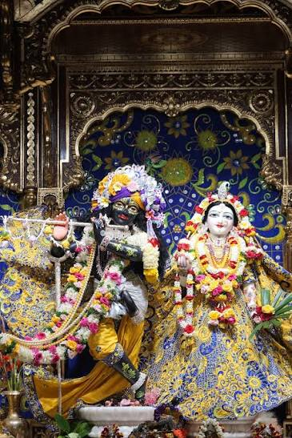
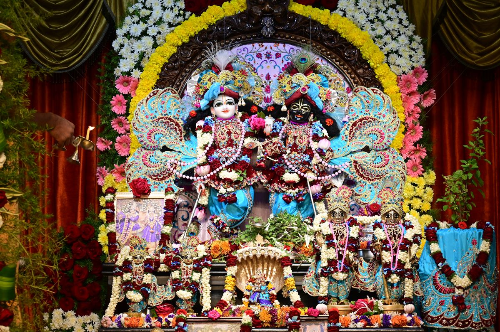
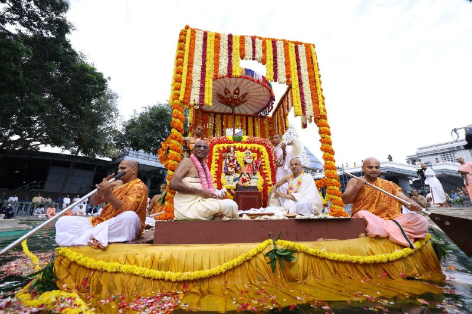
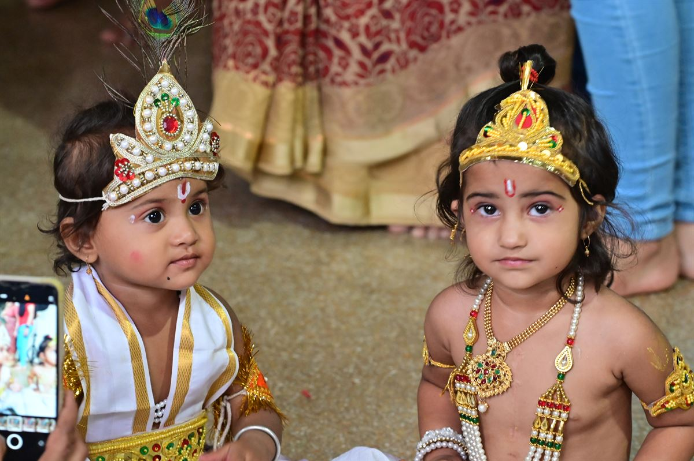
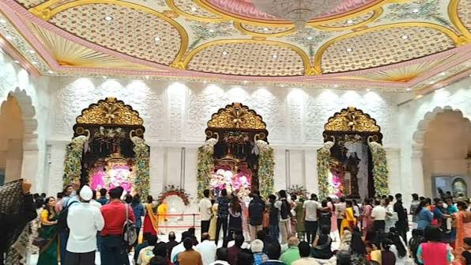
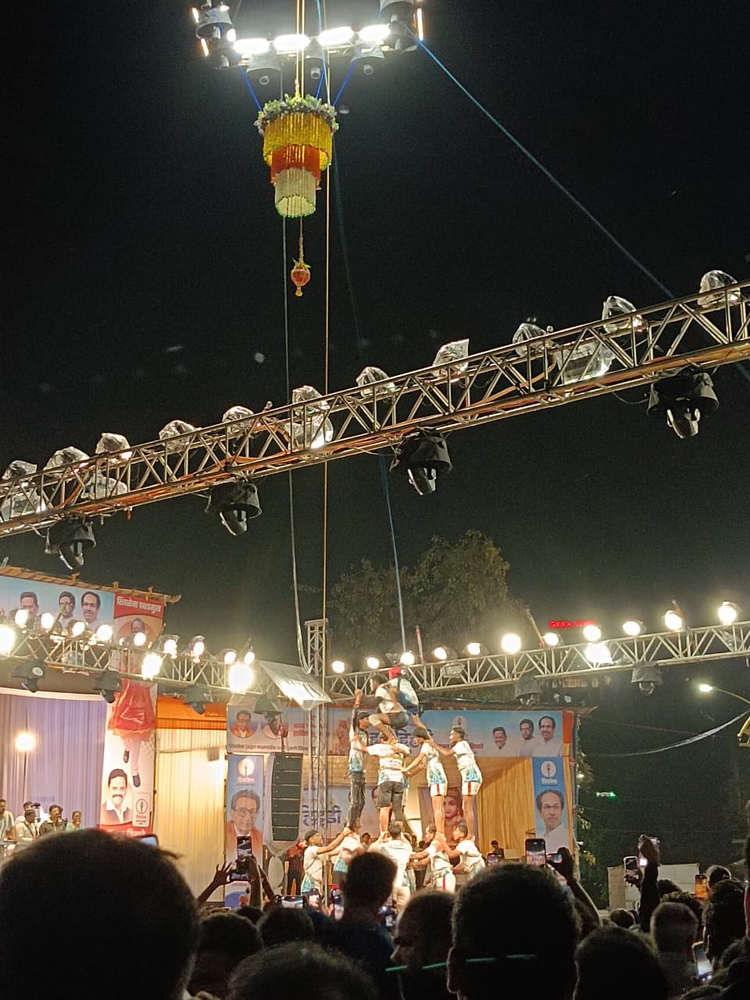
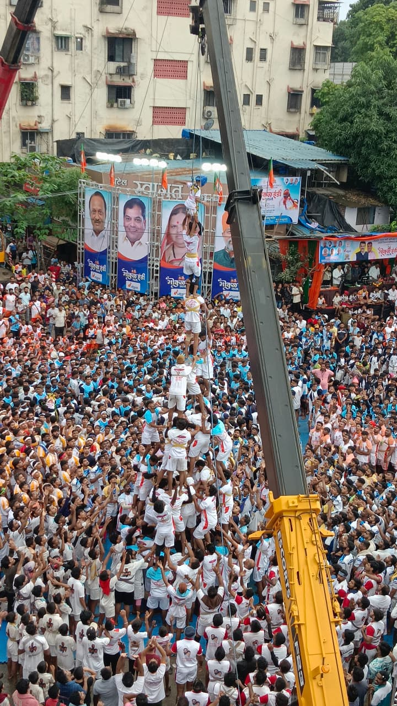

Devotion
Prayers, bhajans and devotional celebrations are an important part of Janmashtami.

CULTURAL HERITAGE / 01
A celebration of devotion, tradition and community.

01 / JANMASHTAMI
Krishna Janmashtami celebrates the birth of Lord Krishna. The festival is observed with prayers, devotional songs, decorations and gatherings of families and communities.
Many celebrations continue into the night, with devotees gathering for prayers and marking the birth of Krishna at midnight.
THE CELEBRATION

Prayers, bhajans and devotional celebrations are an important part of Janmashtami.

Homes, temples and community spaces come alive with festive decorations.

Families and communities come together to celebrate the festival.
02 / DAHI HANDI
Dahi Handi is a popular celebration associated with Janmashtami. Inspired by stories of Krishna's childhood, groups of people form human pyramids to reach and break a pot suspended above them.
In Maharashtra, Dahi Handi has become a major community celebration, bringing people together through participation, teamwork and festive energy.

JANMASHTAMI TODAY
Janmashtami continues to attract active participation from people today. Alongside prayers and traditional celebrations, events such as Dahi Handi bring large groups and communities together.
These celebrations show how cultural traditions can continue to evolve while remaining connected to their roots.
04 / PHOTO STORY

CULTURAL HERITAGE
Janmashtami continues to connect people with traditions, stories and community celebrations. Documenting these moments helps preserve the cultural memories of today for future generations.